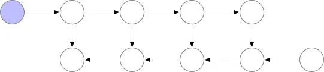

Exploring Data with Python
List of strategies
- mixed precision
- parameter partitioning (deepspeed)
- cpu offloading (deepspeed)
- activation checkpointing
- gradient accumulation
- flashattention2
- contiguous gradients / overlap_comm / bucket sizes - tuning reduces fragmentation and OOM risk
- Ugly numbers
- skip connections from the embedding layer to each transformer block
- initialize projection layers to 0
- torch.compile
Memory Efficient Optimizers
research memory efficient optimizers
Where Did All The Memory Go?
If a 1.5B parameter model like GPT-2 only requires 3GB of memory for its weights in 16-bit precision, why can it not be trained in a 16GB GPU (2020_zero?)? It so happens that during model training, most of the memory is consumed by:
- Model states: optimizer states, gradients, and parameters (weights). The popular Adam optimizer (Kingma 2014), for example, requires storing two additional optimizer states besides the gradients and weights: the momentum and variance of the gradients. If using mixed precision training, full-precision (FP32) master copies of all states, will also be kept - leading to a memory requirement of at least 24GB for our GPT-2 example (2020_zero?).
- Residual states:
- Activations: In the GPT-2 example, a sequence length of 1K and a batch size of 32 requires roughly 60GB of memory in layer activations alone (2020_zero?);
- Temporary buffers: In collective operations (e.g. all-reduce), parameters must be transferred between GPUs - this requires holding them in a buffer (often in full-precision) until released. These buffers can reach multi-GB sizes;
- Memory fragmentation: As the many threads in the GPU take turns occupying and vacating memory, contiguous blocks of available memory start becoming too small to be of use for any application, but large and abundant enough to severely impact memory allocation. This is called memory fragmentation, and can result in out-of-memory errors despite as much as 30% of the total memory still being available (but too fragmented to be of any use) (2020_zero?).
Mixed Precision
Online Softmax and Flash Attention
Due to the quadratic complexity of attention, compute could be blamed for less-than-ideal performance, but modern Transformers are actually memory-bound: most of their layers move far more data than they compute. As a result, the primary bottleneck in attention is actually slow memory access, not floating-point arithmetic (Dao et al. 2022).
GPUs expose a strong hierarchy between on-chip shared memory (SRAM) and off-chip high-bandwidth memory (HBM, aka global memory). For example, NVIDIA’s V100 has 40–80 GB of HBM, with a bandwidth of 1.5–2.0 TB/s, but only 192 KB of on-chip SRAM for every 108 streaming multiprocessors, with an effective bandwidth around 19 TB/s - an order of magnitude higher (Dao et al. 2022).
Attention layers repeatedly access large intermediate matrices that do not fit in SRAM, so they repeatedly fall back to global memory. This is the root cause of the performance bottleneck. Cirvumventing this would require carefully managing SRAM capacity and dataflow, to avoid reading and writing anything to HBM.
The Softmax Problem
The softmax function
\[\text{softmax}(x_i)=\frac{e^{x_i}}{\sum_{j}{e^{x_j}}}\]
is numerically unstable for large inputs, because exponentials grow extremely fast - for example, FP16 overflows around 11 (Ye 2023). It is standard practice to subtract the maximum element in the row (aka the safe softmax):
\[\text{softmax}(x_i)=\frac{e^{x_i-x_{max}}}{\sum_{j}{e^{x_j-x_{max}}}}\]
However, finding \(x_\text{max}\) requires scanning the entire row of \(QK^\top\) beforehand. In a naïve implementation, this means:
- Reading all values to find max;
- Reading them again to compute numerator;
- Reading them again to compute denominator.
Three full global-memory passes - far too slow, and hard to parallelise across tiles.
Online Softmax
Online Softmax (Milakov and Gimelshein 2018) removes this limitation by computing the softmax statistics incrementally, in a streaming fashion. Instead of needing the entire row at once, it maintains running values for:
- The running maximum \(x_{max}\);
- The running sum of exponentials (the denominator \(\sum\)).
This unlocks asynchronous parallelism, long-context scalability, and fewer global memory passes. It uses a neat little trick we won’t be delving into here - if you want to learn more, Jamil (2024) explains it very well, and ties it elegantly to FlashAttention.
In practice, Online Softmax reduces global I/O from 3 passes to 2. But even Online Softmax cannot reduce it to 1 pass on its own.
Flash Attention
Surprisingly, when Online Softmax is paired with the rest of the attention formula, it becomes possible to perform the entire attention computation using just one pass over K and V tiles (matrix tiling consists of splitting a matrix into blocks or tiles).
This is the core innovation of FlashAttention (Dao et al. 2022): it restructures the attention operation so that it can be executed tile-by-tile, entirely inside shared memory, without ever materialising large intermediate matrices in HBM. This practice of combining multiple operations (CUDA kernels, with CUDA being the environment/toolkit for interfacing with NVIDIA GPUs) into a single set of instructions is termed kernel fusion. Because each tile fits in shared memory and all operations were fused into one, only a single access to memory is required.
Here is a high-level description of the FlashAttention algorithm:
- Load a tile of K and V from global memory into shared memory.
- Load the corresponding tile of Q.
- Compute partial attention scores and maintain Online Softmax state in SRAM.
- Immediately apply the softmax-weighted values to accumulate the output.
- Move on to the next tile.
Each tile fits in fast SRAM, and we never store intermediate matrices like \(QK^\top\), so the memory footprint is dramatically reduced. This enables:
- Large speedups (often 2-4×);
- Support for far longer context windows;
- Lower memory usage and improved training stability.
Exactly what we want!
FA2, FA3, and FA4
FlashAttention (FA) represented a shift in mindset, from high-level compute algorithms to ones aware of IO and the idiosyncrasies of the underlying hardware. This shift has only become more obvious in subsequent iterations of the FA algorithm, going beyond hardware-awareness to hardware-specificity, relying on low-level features of the GPU to achieve the highest possible level of hardware utilisation:
- FA2 (Dao 2023): Improves tiling, parallelism, and SRAM usage; generally the fastest algorithm on Ampere, Ada, and older GPUs.
- FA3 (Shah et al. 2024): Built specifically for Hopper (H100). Relies on warp specialization, TMA, and WGMMA - features not available on older architectures.
- FA4 (Frye, Wang, and Feng 2024) (work-in-progress): Extends these ideas to Blackwell (B100/B200), taking advantage of new low-precision Tensor Cores (e.g., FP4/FP6) and improved asynchronous memory pipelines.
For most users running consumer or workstation GPUs - FA3 and FA4 provide no practical advantage, because they lack the hardware features FA3/FA4 rely on. Running them may result in performance deterioration - that is, if they even run.
In practice, and for the majority of users, FA2 is the correct choice.
Activation Checkpoints
Activation checkpointing consists of selectively forgetting activations during each training loop, effectively trading off compute for a shallower memory footprint. The concept (expertly presented in this blog post by Bulatov (2018)) is a clever exploitation of dependencies in the model graph that can reduce memory requirements during training from O(n^2) to O(sqrt(n)) - all for the modest cost of an extra forward pass.
If we picture the training loop as a directed graph, with each layer’s activations as nodes on the graph, and activations triggering dependent nodes in a cascading fashion, one way of managing our GPU’s memory would be to store every node’s values until a complete pass of the training loop is complete. Clearly, this would not be a good idea if - after all, why store the activations of the first nodes in the graph if we only need the preceding node’s activations for any given node? It would be much more memory efficient to forget node values as we progress through the graph:

A big problem with training is that the backward pass starts from the loss node (computed from the last node of the forward pass) and moves in reverse order - if we only vacate computed nodes from memory after they’re no longer needed, we will be keeping a lot of forward pass activations as we walk through the backward pass. The poor man’s solution would be to forget every node as soon as it is consumed - but this results in a quadratic increase of computations:
Chen et al. (2016) found an effective middle ground: by saving intermediate nodes every sqrt(n) steps - checkpoints - and forgetting all those that won’t be needed in the next step, the memory footprint can be greatly reduced, for the modest cost of a second forward pass’ worth of compute:
This pebble game we’re playing can get extremely complex (dynamic programming, tree decomposition, etc), but this much will suffice us.
Parallelism
- Data parallelism: model fits in memory, data is partitioned and processed in parallel.
- Model parallelism: model does not fit in memory, and so it is split vertically - each layer is partitioned across GPUs. Data can also be partitioned, but mini-batches must be fed through all vertical slices of a layer, to ensure data consistency.
- Pipeline parallelism: model does not fit in memory, and so it is split horizontally, with each GPU retaining a layer of the model. Mini-batches must be processed by all layers before the backward pass.
- Model partitioning: the GPU cluster is used as a distributed storage system, where each GPU holds a shard of the model states (optimizer states and gradients). By default, model parameters (weights) are not sharded (model weights fit in memory), and data parallelism is also used - model states are communicated “just-in-time” for the next step.
Whereas data, model, and pipeline parallelism can be thought of as computational parallelism (each GPU does a piece of the work), model partitioning is better described as memory parallelism (each GPU holds a piece of the working data).
! devia incluir um desenhinho basico
Even though Megatron-LM allowed the training of larger models, because it splits models vertically, collective operations are required in the forward and backward steps, in order to bring all vertical slices of a model’s layer back together. This is acceptable for intra-node communication (e.g. in a compute server with multiple GPUs), but too large a penalty for inter-node communication (e.g. in a cluster with many compute servers).
ZeRO
ZeRO uses data parallelism with model state partitioning, leveraging the dependencies between layers to minimize communication volume, maintaining it closer to that of a simple data parallelism scheme.
ZeRO works perfectly together with activation checkpointing - the total partitioned state can be reduced even further by keeping only the necessary activation checkpoints. ZeRO partitions the activation checkpoints across GPUs, hiding the data movement cost behind the extreme arithmetic intensity intrinsic to large models (that is, because computations take a long time, communication can be done in parallel). When device memory is very limited, ZeRO can even move the activation partitions to the CPU, and still remain efficient.
When it comes to collective operations (like all-reduce), if many small collective operations are required, communication will be extremely inefficient, with a lot of overhead. To solve this, many frameworks fuse as many operations as possible into a single, large operation, then communicate the results with a large collective operation - this results in massive speed gains, but the memory overhead becomes prohibitive as model size increases.
The thing is communication doesn’t require extremely large buffers - its the existing kernels that benefitted massively from using one massive block of contiguous memory. DeepSpeed addresses this by setting a constant-size buffer and reworking the optimizer kernels to efficiently handle the sharded buffers, achieving abundant memory gains.
By exploiting its knowledge of the training loop, ZeRO pre-allocates contiguous blocks of memory for longer-lived objects (namely, activation checkpoints and gradients), effectively preventing fragmentation problems.
One of the biggest advantages of deepspeed is its architectural agnosticism, that is, that it requires no changes to the model, and no knowledge of how the model works, as long as a computational graph exists (broadly speaking, which layers depend on which).
This effectively makes DeepSpeed a drop-in replacement for most training arrangements.